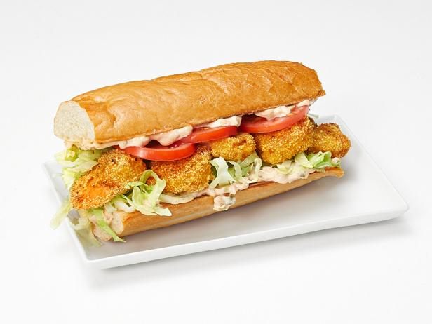

Shrimp Po' Boy

Description
Crispy fried shrimp sandwiches are served piping hot with a spicy and tangy remoulade sauce.
Ingredients
- Vegetable oil for deep-frying
- 4 French rolls, split and hinged
- 4 tablespoons melted butter
- 1 teaspoon minced garlic
- 3 eggs, beaten
- 2 tablespoons Creole seasoning
- ¾ cup all-purpose flour
- 2 pounds jumbo shrimp, peeled and deveined
- 2 cups Kikkoman Panko Bread Crumbs
- 2 cups shredded lettuce
Remoulade sauce
- ½ cup mayonnaise
- 1 tablespoon horseradish
- 1 teaspoon pickle relish
- 1 teaspoon minced garlic
- ½ teaspoon cayenne pepper
- 2 tablespoons Kikkoman Ponzu Lime
Directions
- Combine butter and garlic, spread on rolls and toast in the oven until brown.
- Heat oil in a 2 quart saucepan until 360 degrees. Mix creole seasoning and flour.
- shrimp in flour then egg; roll in panko.
- Fry shrimp in batches until golden brown.
- Spread remoulade sauce on all 4 rolls. Top with shrimp, followed by shredded lettuce.
- Remoulade sauce: Mix mayo, horseradish, pickle relish, minced garlic, cayenne pepper, and ponzu in a bowl.
Nutrition Facts
Per Serving: 1257 calories; protein 73.2g; carbohydrates 127.3g; fat 50g; cholesterol 525.5mg; sodium 2640.7mg.
Link